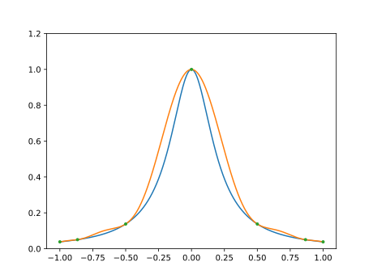
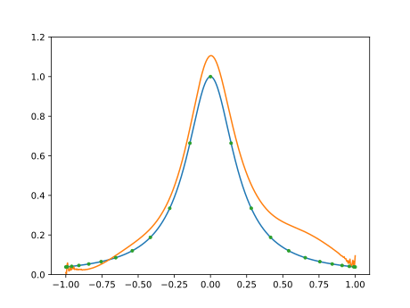
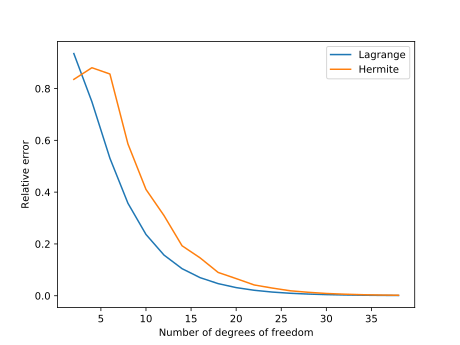

Numerical methods challenge: Day 12
During October (2017) I will write a program per day for some well-known numerical methods in both Python and Julia. It is intended to be an exercise then don't expect the code to be good enough for real use. Also, I should mention that I have almost no experience with Julia, so it probably won't be idiomatic Julia but more Python-like Julia.
Hermite interpolation: Inverting Vandermonde matrix
Today we are comparing Lagrange interpolation with Hermite interpolation. For this example we are using the confluent Vandermonde matrix \(V\). The code is based on an old code of mine that is present in this repo.
As in the case of Lagrange interpolation we solve the system
where \(\mathbf{c}\) is the vector of coefficients and \(I\) is the identity matrix. This method is not stable and should not be used for the computation of higher order interpolants, even for optimally chosed sampling. It will start failing around 20 points. A better approach is to use the barycentric form of the interpolation.
In the example below we use Chebyshev nodes. The nodes are given by
where \(n\) is the degree of the polynomial.
Following are the codes.
Python
from __future__ import division, print_function import numpy as np import matplotlib.pyplot as plt def vander_mat(x): n = len(x) van = np.zeros((n, n)) power = np.array(range(n)) for row in range(n): van[row, :] = x[row]**power return van def conf_vander_mat(x): n = len(x) conf_van = np.zeros((2*n, 2*n)) power = np.array(range(2*n)) for row in range(n): conf_van[row, :] = x[row]**power conf_van[row + n, :] = power*x[row]**(power - 1) return conf_van def inter_coef(x, inter_type="lagrange"): if inter_type == "lagrange": vand_mat = vander_mat(x) elif inter_type == "hermite": vand_mat = conf_vander_mat(x) coef = np.linalg.solve(vand_mat, np.eye(vand_mat.shape[0])) return coef def compute_interp(x, f, x_eval, df=None): n = len(x) if df is None: coef = inter_coef(x, inter_type="lagrange") else: coef = inter_coef(x, inter_type="hermite") f_eval = np.zeros_like(x_eval) nmat = coef.shape[0] for row in range(nmat): for col in range(nmat): if col < n or nmat == n: f_eval += coef[row, col]*x_eval**row*f[col] else: f_eval += coef[row, col]*x_eval**row*df[col - n] return f_eval n = 7 x = -np.cos(np.linspace(0, np.pi, n)) f = lambda x: 1/(1 + 25*x**2) df = lambda x: -50*x/(1 + 25*x**2)**2 x_eval = np.linspace(-1, 1, 500) interp_f = compute_interp(x, f(x), x_eval, df=df(x)) plt.plot(x_eval, f(x_eval)) plt.plot(x_eval, interp_f) plt.plot(x, f(x), ".") plt.ylim(0, 1.2) plt.show()
Julia
using PyPlot function vander_mat(x) n = length(x) van = zeros(n, n) power = 0:n-1 for row = 1:n van[row, :] = x[row].^power end return van end function conf_vander_mat(x) n = length(x) conf_van = zeros(2*n, 2*n) power = 0:2*n-1 for row = 1:n conf_van[row, :] = x[row].^power conf_van[row + n, :] = power.*x[row].^(power - 1) end return conf_van end function inter_coef(x; inter_type="lagrange") if inter_type == "lagrange" vand_mat = vander_mat(x) elseif inter_type == "hermite" vand_mat = conf_vander_mat(x) end coef = vand_mat \ eye(size(vand_mat)[1]) return coef end function compute_interp(x, f, x_eval; df=nothing) n = length(x) if df == nothing coef = inter_coef(x, inter_type="lagrange") else coef = inter_coef(x, inter_type="hermite") end f_eval = zeros(x_eval) nmat = size(coef)[1] for row = 1:nmat for col = 1:nmat if col <= n || nmat == n f_eval += coef[row, col]*x_eval.^(row - 1)*f[col] else f_eval += coef[row, col]*x_eval.^(row - 1)*df[col - n] end end end return f_eval end n = 7 x = -cos.(linspace(0, pi, n)) f = 1./(1 + 25*x.^2) df = -50*x./(1 + 25*x.^2).^2 x_eval = linspace(-1, 1, 500) interp_f = compute_interp(x, f, x_eval, df=df) plot(x_eval, 1./(1 + 25*x_eval.^2)) plot(x_eval, interp_f) plot(x, f, ".") ylim(0, 1.2) show()
In both cases the result is the plot below.
And, if we try with a high \(n\), say \(n=43\), we can see the problems.
Comparison Python/Julia
Regarding number of lines we have: 61 in Python and 70 in Julia. The comparison
in execution time is done with %%timeit magic command in IPython and
@benchmark in Julia.
For Python:
%%timeit -n 100 n = 7 x = -np.cos(np.linspace(0, np.pi, n)) f = lambda x: 1/(1 + 25*x**2) df = lambda x: -50*x/(1 + 25*x**2)**2 x_eval = np.linspace(-1, 1, 500) interp_f = compute_interp(x, f(x), x_eval, df=df(x))
with result
100 loops, best of 3: 18.1 ms per loop
For Julia:
function bench() n = 7 x = -cos.(linspace(0, pi, n)) f(x) = 1./(1 + 25*x.^2) df(x) = -50*x./(1 + 25*x.^2).^2 x_eval = linspace(-1, 1, 500) interp_f = compute_interp(x, f(x), x_eval, df=df(x)) end @benchmark bench()
with result
BenchmarkTools.Trial: memory estimate: 3.13 MiB allocs estimate: 836 -------------- minimum time: 10.318 ms (0.00% GC) median time: 10.449 ms (0.00% GC) mean time: 11.362 ms (1.74% GC) maximum time: 26.646 ms (0.00% GC) -------------- samples: 100 evals/sample: 1
In this case, we can say that the Python code is roughly as fast as the Julia one.
Comparison Hermite/Lagrange interpolation
We want to compare Hermite interpolation with Lagrange interpolation for the same number of degrees of freedom. We use the same function for test purposes
This is the Python code that does that part
n_dof = np.array(range(1, 20)) error_herm = np.zeros(19) error_lag = np.zeros(19) for cont, n in enumerate(n_dof): f = lambda x: 1/(1 + 25*x**2) df = lambda x: -50*x/(1 + 25*x**2)**2 x = -np.cos(np.linspace(0, np.pi, n)) x2 = -np.cos(np.linspace(0, np.pi, 2*n)) x_eval = np.linspace(-1, 1, 500) herm = compute_interp(x, f(x), x_eval, df=df(x)) lag = compute_interp(x2, f(x2), x_eval) fun = f(x_eval) error_herm[cont] = np.linalg.norm(fun - herm)/np.linalg.norm(fun) error_lag[cont] = np.linalg.norm(fun - lag)/np.linalg.norm(fun) plt.plot(2*n_dof, error_lag) plt.plot(2*n_dof, error_herm) plt.xlabel("Number of degrees of freedom") plt.ylabel("Relative error") plt.legend(["Lagrange", "Hermite"]) plt.show()
And this is the comparison of the relative errors
In general, the Lagrange approximation is closer for this function.
Comments
Comments powered by Disqus